Week6-9 <<
Previous Next >> Week15-18
Week10-14
week10
加入組長建立好的倉儲
下載NX3和NX12並修改步驟
week12
NX12電子書整理
Ch2
這個章節介紹的是NX12的相關基礎說明，學習開始，理解和使用於建模，製圖等的NX12軟件包。它包含五個小節：
1.打開NX 12，2.列印，保存和關閉零件文件，3.熟悉NX 12用戶界面，4.使用圖層，5.了解重要的命令和對話框。
2.1 打開NX12並打開文件
2.1.1 開啟NX12
在Windows桌面屏幕上，單擊開始→程序列表→Siemens NX 12→NX 12
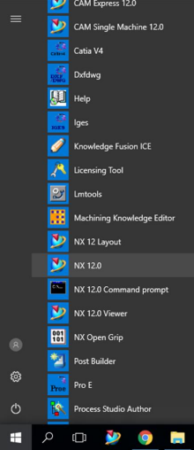
2.1.2 開啟新檔案
➢ 按新增按鈕(這在左上)or按Ctrl+ N
這將打開一個新視窗，詢問要創建的新文件的類型，名稱和位置。NX 12中有多種文件類型，可從位於以下位置的“模板”對話框中選擇窗口的中心。所選文件的屬性顯示在“預覽”下右邊。由於我們要在建模環境中工作並創建新零件，因此僅指定工作環境的單位（英寸或毫米）以及名稱和位置文件。默認單位是毫米。
➢輸入文件的適當名稱和位置，然後單擊“確定”。
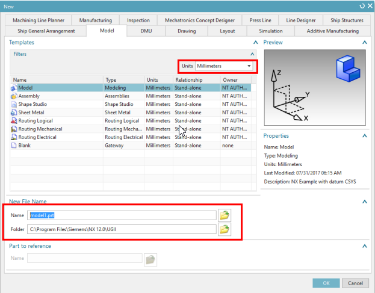
2.1.3打開零件文件
➢單擊屏幕頂部的打開(open)或打開最近的零件按鈕(open a Recent part)➢按Ctrl+O
將顯示“打開零件文件”對話框。您可以在右側查看文件預覽 窗口。您可以通過取消單擊“預覽”按鈕前面的框來禁用“預覽”。
➢點擊取消退出窗口
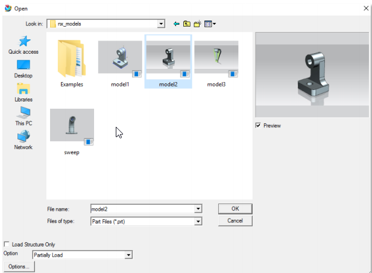
2.2列印，保存和關閉文件
2.2.1 列印NX12圖像
➢ 按下檔案(File) →列印(Print)
2.2.2 保存零件文件
必須經常保存工作。如果由於某些原因，NX 12會關閉，而零件沒有保存後，所有工作都會丟失。要保存零件文件。
➢ 按下檔案(File)→儲存(Save)
有五個選項可以保存文件：
1.儲存: 創建零件文件時，此選項將使用與以前相同的名稱將零件保存在屏幕上。
2.僅保存工作零件: 此選項僅將活動部件保存在屏幕上。
3.另存為: 此選項使您可以使用其他名稱和/或類型將零件保存在屏幕上。默認類型是.prt. 但是，您可以將文件另存為IGES (.igs), STEP 203 (.stp), STEP 214 (.step),AutoCAD DXF (.dxf), AutoCAD DWG (.dwg), CATIA Model (.model) and CATIA V5 (.catpart).
4.保存全部: 全部保存此選項將使用現有名稱保存所有打開的零件文件
5.保存書籤:保存書籤此選項會將屏幕快照和當前模型的上下文保存為.JPEG文件和書籤。
2.3 NX12介面
通過使用不同的圖標，NX 12的用戶界面變得非常簡單。大部分的可以通過在屏幕上導航鼠標並單擊圖標來執行命令。鍵盤輸入主要限於輸入值和命名文件。
2.3.1 鼠標功能
2.3.1.1 滑鼠左鍵(MB1)
鼠標左鍵（在NX中稱為鼠標鍵1（MB1））用於選擇圖標，菜單，和圖形屏幕上的其他實體。在任何功能上雙擊MB1都會自動打開“編輯對話框”。單擊對像上的MB1，使用戶可以快速訪問如下所示的幾個選項。
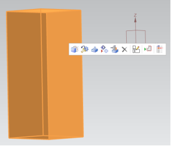
2.3.1.2 滑鼠中鍵(MB2)
鼠標中鍵（MB2）或滾動按鈕用於通過按下來旋轉對象，按住並拖動。模型也可以繞單個軸旋轉。繞軸旋轉垂直於屏幕，將鼠標指針放在圖形屏幕的右邊緣附近，然後旋轉。同樣，對於垂直軸和垂直於屏幕的軸，單擊底部屏幕的上邊緣和上邊緣分別旋轉。如果您同時按住MB2位置幾秒鐘，它將固定旋轉點（出現橙色圓圈符號）您可以在對象周圍拖動以查看
如果是滾動按鈕，則可以通過滾動對象來放大和縮小。單擊MB2將
如果打開了任何彈出窗口或對話框，還可以執行“確定”命令。
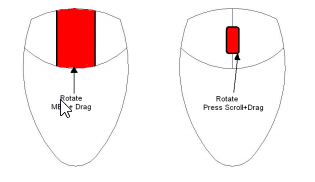
2.3.1.2 滑鼠右鍵(MB3)
MB3或鼠標右鍵用於訪問用戶界面彈出窗口菜單。您可以訪問後續彈出的選項取決於選擇模式和應用。的下圖顯示在Sketch中應用。單擊MB3時選擇功能將提供選項與該功能有關（對象/動作菜單）。
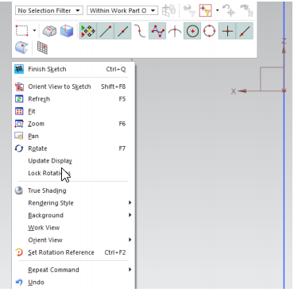
單擊MB3並按住按鈕將在功能周圍顯示一組圖標。
這些圖標帶有可應用於功能的可能命令。
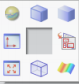
2.4 圖層
圖層用於將對象存儲在文件中，並像容器一樣工作以將對象收集到文件中。
有條理和一致的方式。與簡單的視覺工具（例如顯示和隱藏）不同，圖層提供
一種永久的方式來組織和管理文件中對象的可見性和選擇性。
2.4.1 圖層控制
使用NX 12，您可以使用“圖層”控制對像是可見還是可選。一層是
NX 12中所有對象必須具有的系統定義的屬性，例如顏色，字體和寬度。那裡
NX 12中有256個可用層，其中之一始終是工作層。
工作層是在其上創建對象的層，並且始終可見並且可以選擇，而它仍然是工作層。啟動新零件文件時，第1層是默認的工作層。當工作層更改為另一種類型的層時，先前的工作層將自動變為“可選”，並且可以然後將其分配為“僅可見”或“不可見”狀態。可以在一層上的對像數量不受限制。您可以自由選擇要創建的圖層對象及其所在層的狀態。要將狀態分配給一個或多個圖層。
➢選擇查看→圖層設置
但是，應該注意的是，在關於層將有利於保持一致性文件之間。
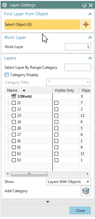
2.5 座標系統
NX中有不同的坐標系。三軸符號用於辨認坐標系。
2.5.1 絕對座標系統
絕對坐標係是從 所有對像都被引用。這是一個固定的坐標系， NX 12建模空間中每個對象的位置和方向是 與這個系統有關。絕對坐標系（或 絕對CSYS）還提供了通用的參考框架 零件文件。一個零件文件中X = 1，Y = 1和Z = 1的絕對位置是 任何其他零件文件中的相同位置

圖形窗口左下角的View Triad僅是視覺對象代表絕對坐標系方向的指示器模型的
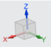
2.6 工具欄
工具欄包含圖標，可作為許多功能的快捷方式。右圖正常顯示了工具欄的主要項目
顯示。但是，您可以找到更多不同圖標功能命令，基於所選模塊以及如何模塊是定制的。
➢右鍵單擊
現有工具欄上的任何位置，都會列出其他工具欄。您可以通過選中添加任何工具欄。
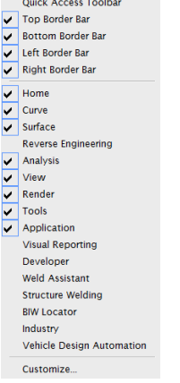
通常，默認設置對於大多數操作應該是足夠的，但是在某些操作期間，
您可能需要其他工具欄。如果要添加與命令有關的按鈕，工具欄
➢單擊任何工具欄上的下拉箭頭，然後選擇“自定義”。
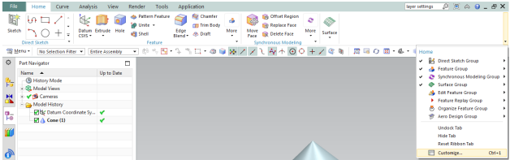
這將彈出一個“自定義”對話框窗口，其中包含所有與命令標籤下的每個工具欄。要添加命令，
➢選擇一個類別，然後將命令從“命令”列表中拖動到所需位置。
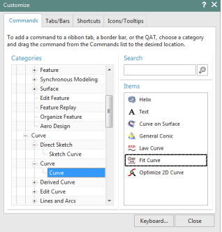
您可以通過以下方式自定義NX 12界面的設置單擊資源欄上的“角色”選項卡。
角色選項卡具有工具欄菜單的不同設置顯示在NX 12界面上。它可以讓你自定義您希望在工具欄中顯示的工具欄介面。
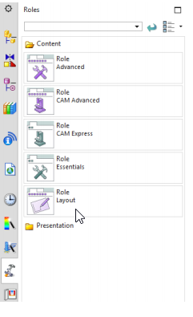
week13
webots tutorial 1
查看https://cyberbotics.com/doc/guide/tutorial-1-your-first-simulation-in-webots
並按照步驟操作，主要是熟悉webots基本的介面與操作。
v-rep bubblerob tutorial
查看http://www.coppeliarobotics.com/helpFiles/en/bubbleRobTutorial.htm
v-rep bubbleRob step1
Week6-9 <<
Previous Next >> Week15-18